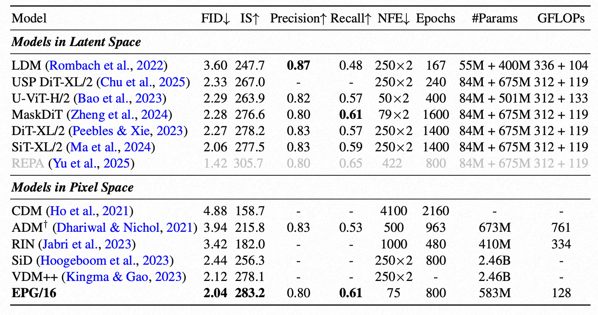
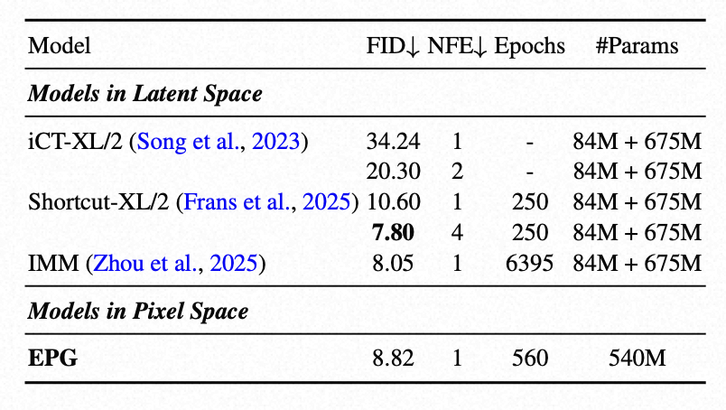
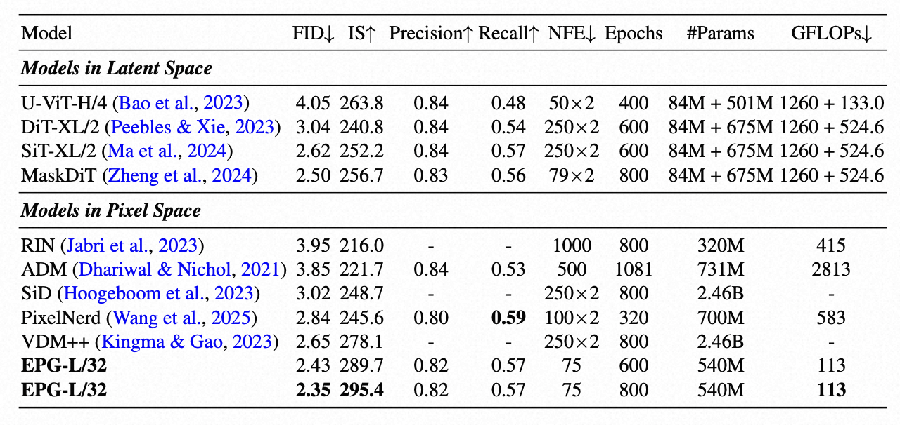
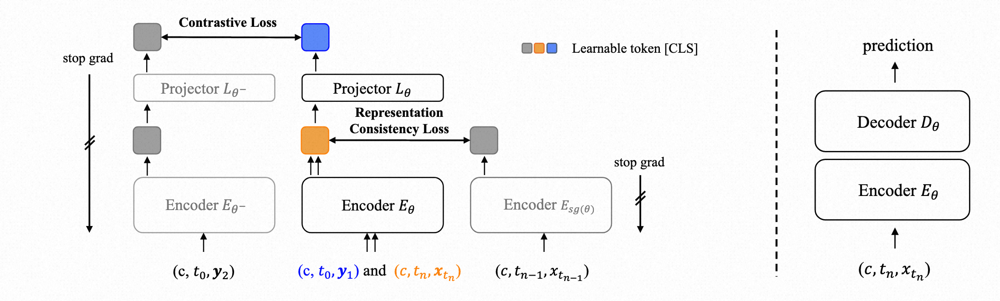

Table 1: System-level comparison on ImageNet-256 with CFG. For latent-space models, we display model parameters and sampling GFLOPs of both the VAE and the generative model. We report GFLOPs of our EPG following DiT. †: both model parameters and GFLOPs are composed of two generative models and one classifier. Text in gray: method that requires external models in addition to VAE.

Table 2: Benchmarking few-step class-conditional image generation on ImageNet-256.

Table 3: System-level comparison on ImageNet-512 with CFG. Evaluation settings are the same as Table 1.

Figure 2: Overview of our method. (Left) Our pre-training framework. c is a learnable token [CLS], t0, tn, tn−1 are time conditions, (y1, y2) are augmented views of clean image xt0, (xtn , xtn−1 ) are temporally adjacent points from the same PF ODE trajectory with xt0 as the initial point. θ− is the exponential moving average of θ, and sg is the stop gradient operation. (Right) Fine-tuning stage. After pre-training, we discard the projector and train Eθ along side a randomly initialized decoder Dθ in downstream generation tasks.
Prior works have explored training diffusion models directly on raw pixels, developing specialized model architectures or training techniques. Despite these efforts, none have achieved training performance and inference efficiency comparable to VAE-based methods primarily due to the high computational cost originating from the model backbone or the slow convergence rate, representing the two major challenges of operating in pixel space.
In this work, we address this by decomposing the training paradigm into two separate stages> as in SSL: (1) Pre-training: we pre-train encoders to capture visual semantics from clean images while aligning them with corresponding points on the same deterministic sampling trajectory, which evolves points from pure Gaussian to the data distribution. In practice, this is realized by matching images with shared noise but different noise levels as in consistency tuning. This pre-training approach reformulates representation learning on noisy images as a generative alignment task, connecting features of noisy samples to their progressively cleaner versions. (2) Fine-tuning: Given the pre-trained encoders, we fine-tune it alongside a randomly initialized decoder in an end-to-end manner under task-specific configurations.
If you find our work interesting, please consider citing our paper:
@misc{lei2025advancingendtoendpixelspace, title={Advancing End-to-End Pixel Space Generative Modeling via Self-supervised Pre-training}, author={Jiachen Lei and Keli Liu and Julius Berner and Haiming Yu and Hongkai Zheng and Jiahong Wu and Xiangxiang Chu}, year={2025}, eprint={2510.12586}, archivePrefix={arXiv}, primaryClass={cs.CV}, url={https://arxiv.org/abs/2510.12586}, }